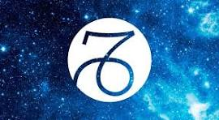

Classement : dixième signe astrologique
Dates : correspond aux personnes qui sont nés du 23 décembre au 22 janvier
Elément : la terre
Couleur : le brun
Pierre précieuse : le saphir
Astre dominant : Saturne
Qualités : fidèle, modeste, fiable, disciplinée et déterminée
Défauts : trop travailleuse, trop sérieuse, froide, peut se montrer méchante et a du mal a exprimer ses émotions
Signe complémentaire et oppposé : le Cancer 